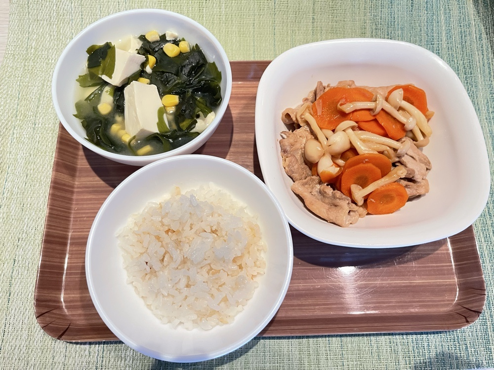

一汁三菜 Ichiju-sansai
最近迷上日本飲食的「一汁三菜」。
起因是 YT 推播了一支影片，一位住在日本的廚師兼營養師介紹這種吃法：一碗飯、一碗湯，再搭配主菜跟副菜。聽說它的雛形是日本傳統的本膳料理，也受到禪寺那種節制、惜物的精神影響，以春夏秋冬的當令食材順應自然，在有限中吃出精緻，不浪費食材，營養還能平衡，養生又養身。
最吸引我的，除了我本來就喜歡日料，更是它超簡單的備料原則：這餐吃不完的留給下一餐，哪些食材可以提前準備，整個化繁為簡。
立刻做起來！
隔天直奔超市，看到有興趣的蔬菜跟肉品就買回家。回家後我把冰箱的食材跟調味料全部拍照丟給 Gemini，跟它說我想做一汁三菜，它馬上給了我幾個建議。
午餐主菜決定用超市買到的即期品豬里肌肉片，搭壽喜燒醬、米酒跟大蒜；湯品就是味噌湯。主食是冰箱裡本來就有的冷凍白飯，我都是一次煮一鍋，用 100 克分裝，每次剛好是半碗的量。
菜單確定後就進廚房洗菜、切菜，真的不用半小時就上桌了，成品我非常滿意！
吃完，只覺得「夠了」
說來神奇，它看起來清淡、分量不多不少，吃完卻超有滿足感。不是撐，是「恰到好處」的舒服。最重要的是，我今天居然沒有飯後想找點心吃！平常我每餐吃完都會想來點小零食或小甜點收尾，像是一小杯奶茶、幾口冰淇淋之類的，但今天完全沒有這個欲望，只覺得兩個字：「夠了」。
前情提要一下：這餐距離早餐快 6 小時，我還去健身房重訓加有氧一個多小時，照理說應該會想狼吞虎嚥才對，沒想到這餐吃得這麼節制又平靜。這讓我很好奇，我的身體到底發生了什麼事？
你聽過頭期消化嗎？
查了一下，發現可能跟這個有關：你聽過頭期消化嗎？（Cephalic Phase Digestion）講白話好了，因為連我自己都印象模糊，哈哈🤣
當食物還沒進到嘴裡，身體就先啟動的消化預備反應，由大腦主導，再透過迷走神經傳到消化道。
以今天的我來說，從切紅蘿蔔、雪白菇，到聽肉片下鍋滋滋作響、聞到味噌跟壽喜燒醬的香氣，大腦早就開始預備了：唾液、胃酸、消化酵素開始分泌，腸胃的血流和蠕動也跟著增加，有助於後續的消化吸收，也跟飽足感、血糖調節有關。
相反地，外食、吃太快，或是邊追劇吃到食不知味的時候，大腦就沒有完整收到「我要好好吃一頓飯囉」的訊號。而且壓力（交感神經活化）還會抑制這個反應，這也是為什麼邊滑手機、邊趕時間、邊壓力大地吃飯，很容易脹氣或消化不良。
不過我也要平衡報導一下！今天是我的放假日，背景壓力本來就很低，加上這餐有蛋白質、蔬菜跟澱粉的搭配，這些可能都有貢獻，所以原因還是蠻多元的啦！
忙的時候，也能照顧自己
但這不代表工作日就有藉口不好好吃飯，情境是可以創造的！我自己也有很忙的日子，但我寧可安心坐下來好好咀嚼，吃一頓滋養身心的料理。
這不是在說一定要餓到不行才能吃飯。只是我發現很多人是越忙，健康越被忽略。無形中這邊塞兩口餅乾、那邊吃兩顆糖，咖啡、手搖飲也喝不少。我是覺得，如果真的沒時間好好吃飯，至少要察覺自己在忙碌中把什麼放進了身體，保養可以從這裡開始。
我自己忙到沒時間時的做法
又有點離題了😂
不過這些都圍繞在「怎麼照顧身體」這個主題裡啦。
新餐具與洗碗的儀式感
這次是我第一次實作一汁一菜（一汁三菜的簡化版），還在興頭上，躍躍欲試地想著接下來還可以做出什麼餐盤🍱。為此下午我還跑去宜得利買了三個新的小餐具，因為這種餐食的器皿比較精緻，看了好有儀式感～
對了，還有個重點：可能有些人看了覺得這種料理不就要洗一堆碗嗎？😵💫是啦，但這其實也被視為調節身心的一環，學著讓自己慢下來，有時間沉澱與感恩。
好喜歡每次找到令人興奮的事，動力滿滿的感覺，希望自己能持續下去，留下更多食譜！
今日料理紀錄
🍱 一汁一菜：壽喜燒風蒜香豬肉＋海帶芽豆腐玉米味噌湯
【主食】白飯
- 白飯100 g（約半碗）
【一菜（主菜）】壽喜燒風蒜香豬肉
食材
- 豬里肌炒肉片120 g
- 胡蘿蔔切片
- 雪白菇少許
- 蒜頭切片
調味料
- 壽喜燒醬2～3 湯匙
- 米酒少許
- 油少許
爆香
熱鍋下少許油，放入蒜片爆香。
炒肉、下蔬菜
下豬肉片炒至變色，加入蔬菜拌炒。
調味收汁
淋入壽喜燒醬與少許米酒，大火快速翻炒收汁，至食材入味、肉片熟透即可起鍋。
【一汁（湯品）】海帶芽豆腐玉米味噌湯
食材
- 家常豆腐切塊
- 乾燥海帶芽少許
- 玉米粒2 湯匙
調味料
- 鰹魚粉1 小匙
- 味噌適量
煮湯底
鍋中加水與鰹魚粉，放入豆腐塊、海帶芽與玉米粒煮 2 分鐘。
熄火化味噌
熄火後，取適量味噌用湯勺在湯中化開、拌勻即可盛碗。味噌不久煮，能保留香氣與風味。
